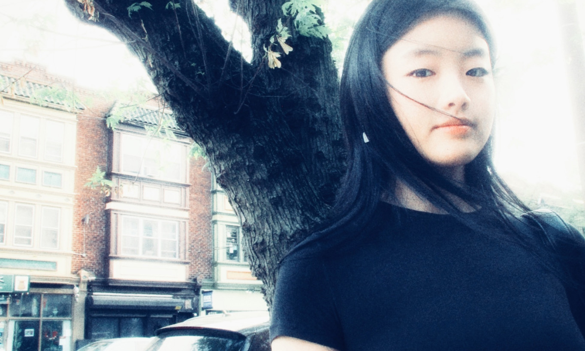

Menu
Hello there, I'm Betty. Originally from South Korea, I am currently pursuing a Bachelor's in User Experience and Interaction Design.
How it started
In August 2022, as a high school senior, I stood before my parents, sharing a decision that had been years in the making.
After much internal debate, I decided to pursue their long-held dream for me — to become a dentist.
A glimpse back
Though the announcement was made, I was still unsure of my decision. I reflected on a pivotal period, where I spent countless hours alongside my dad, delivering food through DoorDash, UberEats, and Postmates during quarantine.
It was a time of struggle for many, and I saw firsthand the challenges that delivery drivers in my community faced daily — stress, overwhelm, and the lack of support.
The shift to UX
Inspired, I began exploring UX design, looking for ways to improve the lives of food delivery drivers.
Through this experience, I discovered a deep fascination with understanding different contexts and satisfaction in solving problems that could improve lives.
A tribute to my roots
Today, I carry those experiences with me, paying homage to my immigrant background and childhood passion for helping underrepresented and marginalized communities.
Through design, I strive to give voice to those who often go unheard, creating solutions that make a real difference in people's lives.
What fuels me
Outside of design, I find joy in the simple pleasures — like the feel of quality leather, the charm of a funky lamp, or the ease of an all-black wardrobe, electric guitar, fashion, art, and the serenity of nature.